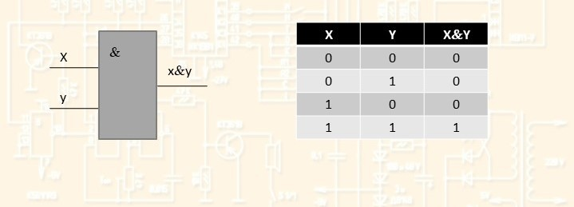
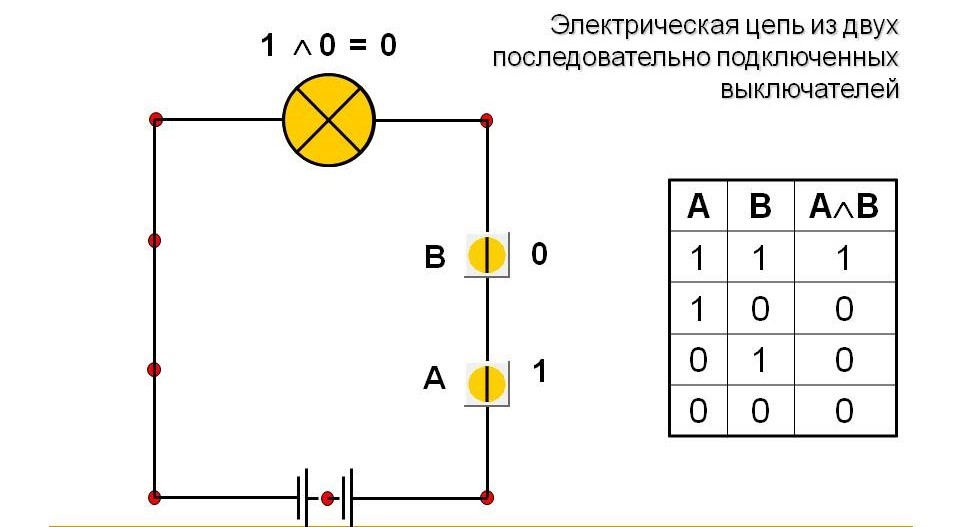

Схема «И» (конъюнктор) реализует конъюнкцию двух или более логических значений. Условное обозначение на структурных схемах схемы “И” с двумя входами: X y x&y 
 Конъюнктор можно условно изобразить схематически электрической цепью вида: X Y Электрическая схема: источник питания лампочка ключи провода Только когда через оба контакта идет ток лампочка будет гореть.